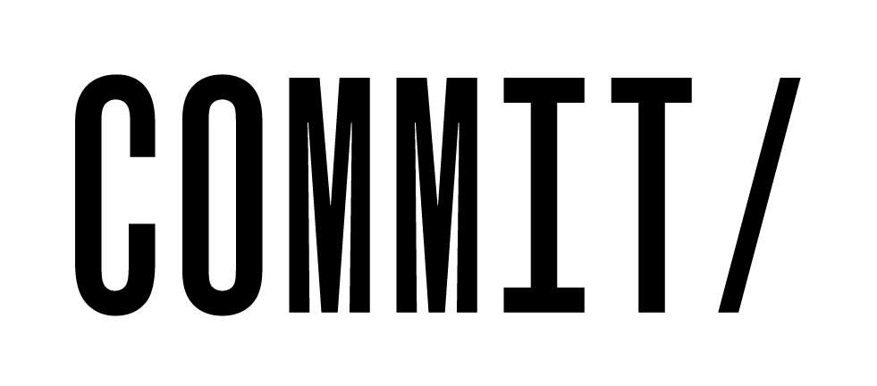

The Third Use Case
If you run a project that is all about enriching scientific output, the first place to look is your own data. Eat your own dogfood!
Anonymous
Data2Semantics aims to provide essential semantic infrastructure for bringing e-Science to the next level.
A core task for scientific publishers is to speed up scientific progress by improving the availability of scientific knowledge. This holds both for dissemination of results through traditional publications, as well as through the publication of scientific data. The Data2Semantics project focuses on a key problem for data management in e-Science:
The COMMIT/ data and vocabulary catalog is intended to share expertise and spark synergy between different COMMIT/ projects. We use it to collect information about all datasets and vocabularies used within COMMIT/, not just the datasets and vocabularies we produce.
Data and vocabularies can be added by filling in a simple web form.
The catalog is an initiative of three COMMIT/ projects running at VU Amsterdam, Data2Semantics, SEALINCMedia and METIS.